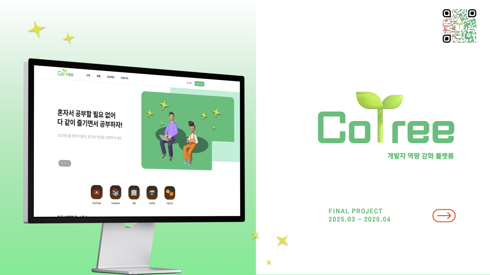

About Me
"문제를 다양한 관점에서 바라보고, 보안과 유지보수성을 고려한 백엔드 개발을 지향합니다."
- 이름: 김해찬
- 전공: 정보보안암호수학
- 강점: 보안에 대한 높은 인식, 새로운 기술 습득과 적용 능력
- 개발 철학: 단순한 기능 구현이 아니라 보안·성능·확장성을 함께 고려한 설계, 팀워크와 코드 리뷰를 통한 성장을 지향합니다.
Skills
언어
Java, Python, C/C++
백엔드 프레임워크
Spring Boot, Spring Security
프론트엔드 & 템플릿
HTML, JSP, Thymeleaf, Next.js
데이터베이스
MySQL, Redis
인프라 & 배포
AWS EC2, S3, RDS, Docker, Terraform
테스트
JUnit5, Mockito, Jacoco
CI/CD & 보안
GitHub Actions, 브랜치 보호 규칙, 환경변수 관리
기타
Git, REST API 설계
Projects

Career & More
국민대학교
정보보안암호수학과
2018-03 ~ 2024-02
- 수학적 원리에 기반한 암호학 이론을 학습하고 C/C++로 암호 모듈을 최적화했습니다.
- 공개 키 기반 구조(PKI)의 인증 및 서명 로직을 직접 구현하며 보안의 기초를 다졌습니다.
- Python을 활용하여 통계 기반 데이터를 분석하고, 전처리 및 시각화 역량을 길렀습니다.
프로그래머스 데브코스
클라우드 기반 백엔드 엔지니어링
2024-11-15 ~ 2025-04-18
- Spring Framework, MySQL 기반 백엔드 서비스 개발 역량을 강화했습니다.
- Terraform을 활용한 AWS 인프라 코드 관리(IaC) 방법을 학습했습니다.
- Git/GitHub 기반 CI/CD 파이프라인과 RESTful API 협업으로 자동 배포 환경을 경험했습니다.
자격증
SQLD, 정보처리기사, 빅데이터 분석기사